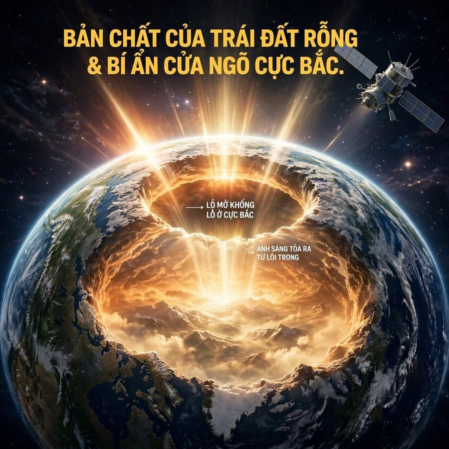
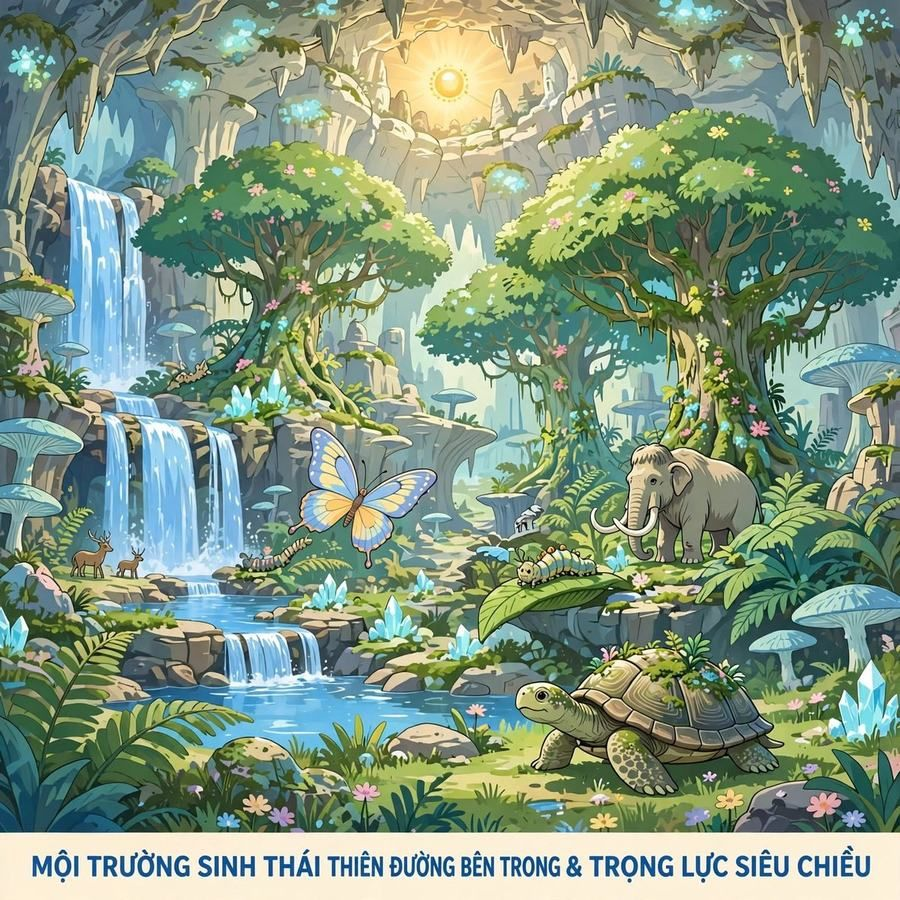
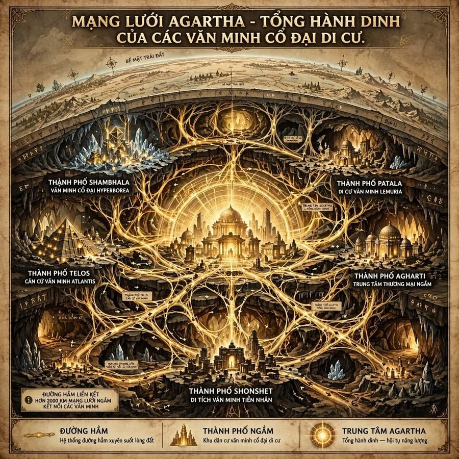
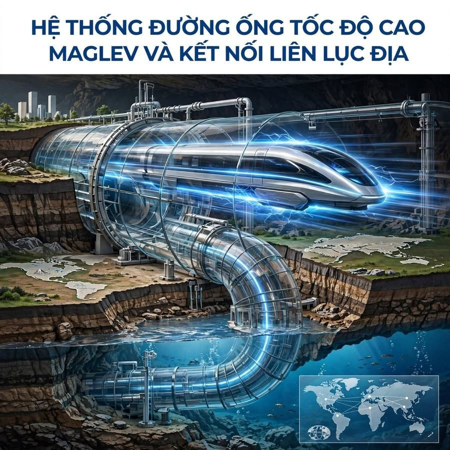
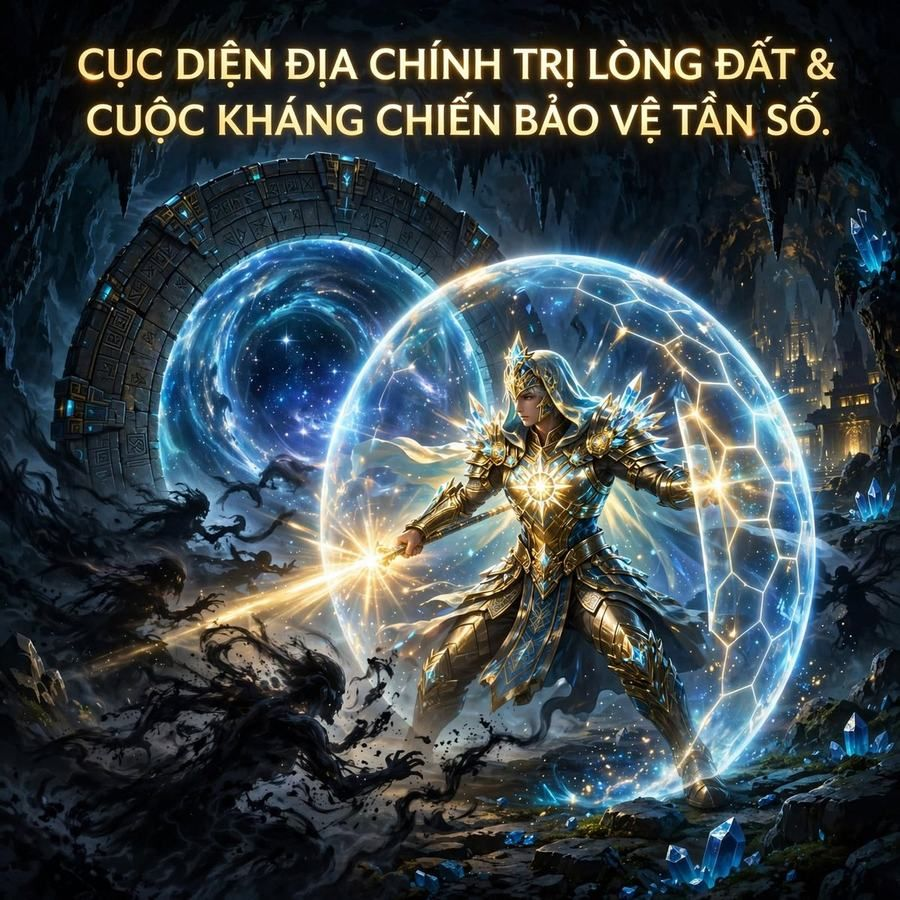
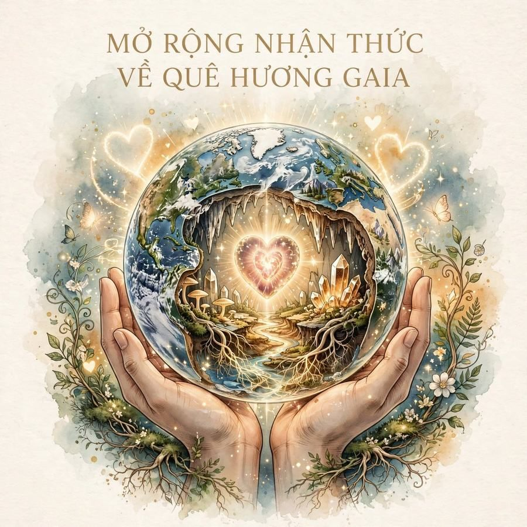

Trang chủ / Chuyên đề 4: Văn Minh Lòng Đất / Kỳ 31
Chuyên đề 4 · Kỳ 31 / 100
CẤU TRÚC TRÁI ĐẤT RỖNG (HOLLOW EARTH) & MẠNG LƯỚI TRÁI ĐẤT TRONG (AGARTHA)

Sau khi khép lại chuyên đề 3 với bức tranh rực rỡ về di sản di truyền 12 chuỗi DNA và Kỷ nguyên Thức Tỉnh của loài người, chúng ta chính thức bước sang chuyên đề 4: Bí Ẩn Văn Minh Lòng Đất (Agartha) & Chủ Nhân Bản Địa Trái Đất.
Nếu như ở các chuyên đề trước, chúng ta đã hướng tầm mắt lên bầu trời đêm để tìm hiểu nguồn gốc thiên hà từ Lyra, Pleiades, Sirius hay Nibiru, thì ở chuyên đề 4 này, chúng ta sẽ thực hiện một chuyến du hành ngược vào lòng đất — nơi cất giữ những bí mật kiến tạo cổ xưa nhất của hành tinh Trái Đất!
Từ thuở sơ khai của nền địa lý học hiện đại, con người luôn được giảng dạy rằng Trái Đất là một khối cầu đặc chắc với lõi sắt-niken nóng chảy. Nhưng liệu mô hình khoa học bề mặt đó có phải là toàn bộ sự thật?
Cấu trúc thực sự của Trái Đất Rỗng (Hollow Earth) vận hành theo cơ chế vật lý siêu chiều nào? Tại sao ở các vùng cực lại xuất hiện những cổng ngõ không gian khổng lồ dẫn thẳng vào thế giới bên trong? Môi trường sinh thái thiên đường, nguồn sáng Mặt Trời Nội Thể và hệ động thực vật khổng lồ bên dưới lòng đất tồn tại ra sao? Mạng lưới Agartha vĩ đại đã được hình thành như thế nào qua hàng triệu năm di cư của các văn minh cổ đại? Và cơ sở hạ tầng tàu điện từ tốc độ cao Maglev kết nối các đại lục ngầm vận hành kỳ diệu như thế nào?
Hãy cùng dấn thân vào Kỳ 1: Cấu Trúc Trái Đất Rỗng & Mạng Lưới Trái Đất Trong (Agartha) để bắt đầu chuyến hành trình giải mã thế giới ngầm đầy kinh ngạc!
✦ ✦ ✦1. BẢN CHẤT CỦA TRÁI ĐẤT RỖNG (HOLLOW EARTH) & BÍ ẨN CỬA NGÕ CỰC BẮC
Khái niệm Trái Đất Rỗng không phải là một lý thuyết viễn tưởng mới xuất hiện, mà đã từng được lưu truyền trong truyền thuyết của vô số văn hóa cổ đại và được xác minh qua các thông tin giải mật vũ trụ.
A. Quy Luật Tạo Hóa: Tất Cả Các Thiên Thể Tự Nhiên Đều Rỗng
- Nguyên Lý Kiến Tạo Vũ Trụ: Các hành tinh, Mặt Trăng và ngôi sao tự nhiên trong Đa Vũ trụ khi được sinh ra đều sở hữu cấu trúc lòng rỗng.
- Độ Dày Vỏ Trái Đất: Vỏ Trái Đất không đặc hoàn toàn mà là một lớp vỏ đá silicat và thạch anh có độ dày khoảng từ 1.200 đến 1.600 km.
B. Cửa Ngõ Cực Bắc & Vùng Phẳng Bằng
- Tọa Độ Cổng Ngõ Cực Bắc: Tại khu vực địa lý vùng Cực Bắc, bề mặt hành tinh có một điểm trũng lòng chảo phẳng khổng lồ với cửa ngõ dẫn vào lòng đất mở rộng từ hàng trăm đến hàng ngàn kilômét.
- Bí Mật Ảnh Vệ Tinh: Nhiều hình ảnh chụp từ quỹ đạo không gian đã ghi nhận khoảng trũng mở rộng này tại khu vực cực. Các bức ảnh công cộng thường bị xử lý hoặc che mờ phần đỉnh cực để giữ bí mật về cửa ngõ lối vào.

2. MÔI TRƯỜNG SINH THÁI THIÊN ĐƯỜNG BÊN TRONG & CƠ CHẾ TRỌNG LỰC SIÊU CHIỀU
Thế giới bên trong vỏ Trái Đất mang một môi trường sống hoàn toàn khác biệt so với bề mặt thô ráp bên ngoài.
A. Mặt Trời Nội Thể & Không Khí Tự Phát Sáng
- Mặt Trời Nội Thể (Inner Sun): Tại trung tâm tĩnh lặng của Trái Đất, các hạt điện tử mềm và năng lượng ánh sáng tập trung lại tạo thành một Mặt Trời Nhân Lõi nhỏ phát ra ánh sáng ôn hòa.
- Bầu Không Khí Không Có Bóng Râm: Ở độ sâu từ 160 km trở đi, không khí bên trong tự phát ra dải quang phổ Etheric từ mọi hướng, khiến thế giới ngầm hoàn toàn không có bóng râm u tối.
- Hệ Sinh Thái Khổng Lồ: Nhờ nguồn năng lượng từ trường ổn định và bầu khí quyển giàu dinh dưỡng, thực vật và động vật bên trong phát triển với kích thước khổng lồ, xanh tốt và có tuổi thọ cao hơn rất nhiều so với sinh vật bề mặt.
B. Cơ Chế Trọng Lực Siêu Chiều
- Trọng Lực Không Do Lực Ly Tâm: Trọng lực không đơn thuần được tạo ra từ lực ly tâm của vòng quay Trái Đất, mà do sóng bức xạ điện từ vô hướng tác động.
- Vùng Trọng Lực Bằng Không (Zero-Gravity Zone): Khi đi sâu xuống khoảng 10 đến 15 km, cơ thể sinh học bắt đầu thấy nhẹ đi. Ở độ sâu khoảng 1.100 km, một khoảng không gian trọng lực gần như bằng 0 xuất hiện trước khi ranh giới đảo chiều trọng lực đưa sinh mệnh đặt chân lên bề mặt lòng đất bên trong!

3. MẠNG LƯỚI AGARTHA — TỔNG HÀNH DINH CỦA CÁC VĂN MINH CỔ ĐẠI DI CƯ
Mạng lưới Agartha chính là tên gọi chung của liên minh các đô thị, vương quốc và hệ thống hang động kết nối dưới lòng đất trên toàn cầu.
A. Sự Di Cư Qua Các Thảm Họa Địa Chất
- Trú Ẩn Khi Bề Mặt Biến Động: Qua hàng triệu năm lịch sử, mỗi khi bề mặt Trái Đất xảy ra chiến tranh vũ trụ hay thảm họa địa chất, giới tinh hoa và cư dân của các nền văn minh tiên tiến cổ đại đã chủ động rút xuống lòng đất để bảo tồn tri thức và dòng máu.
- Các Trung Tâm Văn Minh Chính: Mạng lưới Agartha sở hữu các đại đô thị ngầm nối liền bên dưới sa mạc Gobi, hệ thống hang động khổng lồ dưới dãy Himalaya, thành phố ngầm bên dưới núi Shasta, và các căn cứ tại khu vực Nam Cực.
B. Sự Đa Dạng Của Các Chủng Tộc Cư Trú
- Nơi Hội Tụ Đa Chủng Tộc: Agartha không phải là một chủng tộc đơn nhất. Nơi đây là nhà của cư dân hậu duệ các văn minh cổ, các cư dân da trắng cao lớn, cùng các sinh mệnh bản địa Trái Đất tồn tại ở các dải mật độ cao.

4. HỆ THỐNG ĐƯỜNG ỐNG TỐC ĐỘ CAO MAGLEV VÀ SỰ KẾT NỐI LIÊN LỤC ĐỊA
Để kết nối hàng ngàn đô thị ngầm rải rác khắp hành tinh, một hệ thống giao thông siêu hiện đại đã được xây dựng và vận hành suốt hàng ngàn năm.
A. Tàu Điện Từ Kháng Hấp Dẫn (Antigravity Maglev Tubes)
- Tốc Độ Lên Đến 1.200 km/h: Nằm sâu dưới các tầng đá, hệ thống đường ống chân không vận hành các đoàn tàu chạy bằng xung lực điện từ và công nghệ kháng hấp dẫn, cho phép di chuyển với tốc độ cực đại vượt quá 1.200 km/h.
- Kết Nối Xuyên Lục Địa: Mạng lưới đường hầm này nối liền các đại lục với nhau ở độ sâu kỷ lục: Từ khu vực Bắc Mỹ nối thẳng tới Nam Mỹ, xuyên qua Đại Tây Dương và nối liền với các căn cứ Nam Cực.
B. Kỹ Thuật Thủy Tinh Hóa Đá (Vitrified Tunnels)
- Công Nghệ Khoan Đá Nung Chảy: Để tạo ra các đường hầm kiên cố không cần trụ chống, công nghệ tia nhiệt siêu cao tần được sử dụng để nung chảy đá tại chỗ, biến vách đường hầm thành một lớp thủy tinh cứng cáp như kim cương.

5. CỤC DIỆN ĐỊA CHÍNH TRỊ LÒNG ĐẤT & CUỘC KHÁNG CHIẾN BẢO VỆ TẦN SỐ
Thế giới ngầm không hoàn toàn là một thiên đường yên bình tuyệt đối; nơi đây cũng trải qua những cuộc tranh chấp phức tạp giữa các thế lực.
A. Sự Xâm Nhập Của Lực Lượng Tiêu Cực
- Tranh Chấp Lãnh Thổ Dưới Lòng Đất: Các thuộc địa Bò sát tàn dư cùng các lực lượng xâm lược từ bên ngoài đã nhiều lần tìm cách đe dọa, xâm nhập và chiếm đoạt mạng lưới hang động của Agartha.
- Thỏa Thuận Ngầm Với Các Căn Cứ Ngầm Sâu: Sự thâm nhập này đã dẫn đến việc xây dựng các căn cứ quân sự ngầm sâu phối hợp với giới tinh hoa bề mặt để thực hiện các chương trình thí nghiệm di truyền tiêu cực.
B. Liên Minh Kháng Chiến Agartha (Agarthan Alliance)
- Giữ Vững Tần Số Bảo VỆ Gaia: Nhiều phe phái Agartha hòa bình đã phối hợp với Liên Đoàn Thế Giới Thiên Hà để thành lập lực lượng kháng chiến, kiên quyết bảo vệ các Cổng Sao ngầm, giữ vững tần số năng lượng cho Trái Đất và ngăn chặn sự bành trướng của bóng tối.

6. LỜI KẾT KỲ 1: MỞ RỘNG NHẬN THỨC VỀ QUÊ HƯƠNG GAIA
Kỳ 1 của chuyên đề 4 khép lại khi bức màn bí mật về Trái Đất Rỗng & Mạng Lưới Agartha được vén lên:
- Gaia Là Một Sinh Mệnh Đa Chiều Sống Động: Trái Đất không phải là một hòn đá vô hồn với lõi kim loại chết. Gaia là một sinh mệnh thiêng liêng rỗng lòng, chứa đựng vô số tầng lớp sự sống, văn minh và tần số nhận thức khác nhau!
- Sự Hợp Nhất Đang Đến Nguồn: Khi nhận thức của nhân loại bề mặt được nâng cao, bức tường ngăn cách giữa thế giới bề mặt và thế giới ngầm Agartha sẽ dần tan biến, mở ra Kỷ nguyên Hợp nhất rực rỡ của toàn bộ cư dân Trái Đất!
